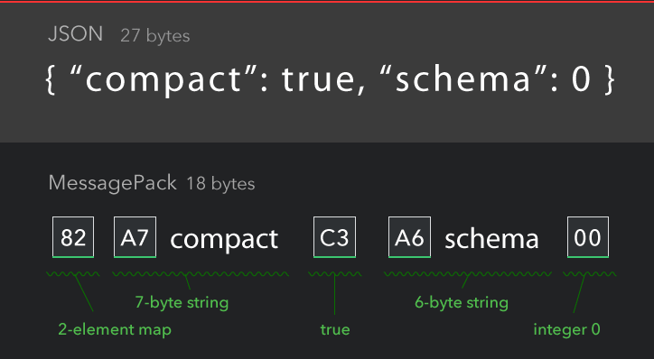
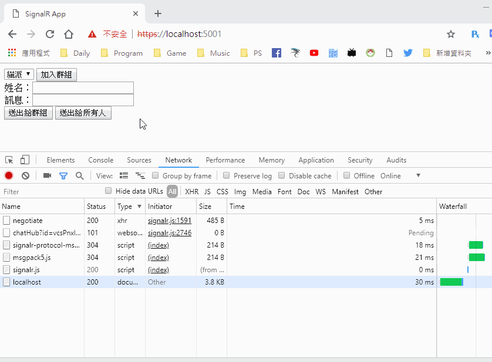
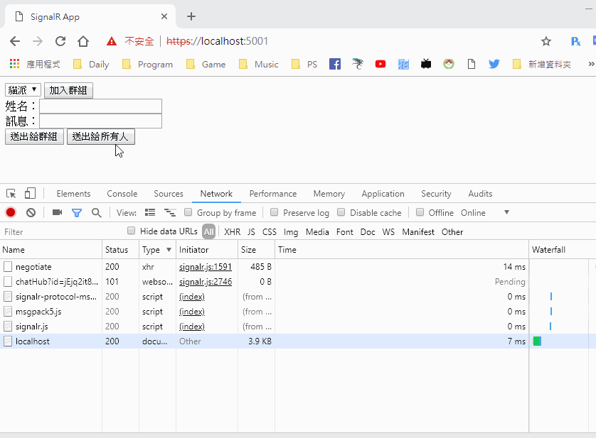

[鐵人賽Day9] 使用MessagePack傳輸更小的資料
文章目錄
MessagePack是一個類似Json格式但是比Json速度更快、檔案更小，不過似乎還沒很流行就是了，既然ASP.Net Core SignalR文件上面有特別提到，那我們今天就來用用看這個新的資料格式吧!
MessagePack跟Json差在哪?
MessagePack使用二進位序列化組成，下面是官方示意圖

從圖來看他會幫你把資料轉成二進位來達成更小的容量，從27bytes縮小到18bytes，縮小了快一半，如果長期下來真的是可以少不少的流量，官網有個Demo可以幫你把JSON轉成MessagePack，點進去後再點上方的Try
安裝及使用MessagePack
官網不知道為什麼同一語言有好幾個版本…，SingalR本身就支援MessagePack了，有自己的版本，所以就使用SignalR的版本吧!
後端部分
先用aspnet cli安裝
$ dotnet add package Microsoft.AspNetCore.SignalR.Protocols.MessagePack
首先先在Starup.cs註冊服務，放在AddSignalR後面。
services.AddSignalR().AddMessagePackProtocol();
前端部分
我們要先用NPM安裝套件
$ npm install @aspnet/signalr-protocol-msgpack
然後去node_module裡面找出下面2個檔案signalr-prtocol-msgpack.js和msgpack5.js，把它移動到wwwroot/lib底下，覺得這樣有點麻煩，所以我直接把他寫成shell指令了…
cmd
copy node_modules\@aspnet\signalr-protocol-msgpack\dist\browser\signalr-protocol-msgpack.js wwwroot\lib\signalr-protocol-msgpack.js
copy node_modules\msgpack5\dist\msgpack5.js wwwroot\lib\msgpack5.js
bash
cp node_modules/@aspnet/signalr-protocol-msgpack/dist/browser/signalr-protocol-msgpack.js wwwroot/lib/signalr-protocol-msgpack.js
cp node_modules/msgpack5/dist/msgpack5.js wwwroot/lib/msgpack5.js
開啟wwwroot/index.html引入js
<script src="lib/msgpack5.js"></script>
<script src="lib/signalr-protocol-msgpack.js"></script>
註冊到SignalR到protocol裡
const connection = new signalR.HubConnectionBuilder()
.withUrl("/chatHub")
.withHubProtocol(new signalR.protocols.msgpack.MessagePackHubProtocol())
.build();
到這邊就OK了！你說好像看不出來有什麼變化??因為都是在SigalR內部跑的，其實可以用F12開發者工具來看
打開F12 -> NetWork -> 找到type是Websocket -> 選擇後右邊在選Frames
那麼就來比較一下差別吧，資料統一貓派群組、名字和訊息都是123
下面這個是JSON，資料長度是傳送91，接收73

這個是MessagePack，傳送41，接收49，資料也很明顯的改成二進位

結論是其實MessagePack資料量真的小蠻多，所以要開發signalR時記得都要把它打開，反正signal會解析，我們只要安裝並套用設定就好了，今天大概就介紹這樣吧！